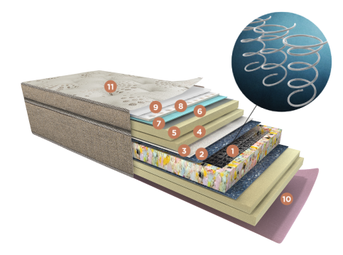

BENEFICIOS
Disfruta un mejor descanso con el doble de protección natural antibacterial. El modelo Terra+Cobre posee estructura de resortes LFK el cual entrega mayor firmeza y soporte a tu columna. Su relleno HR garantiza una larga vida útil, sumando su tela con el doble de cobre (*) que entrega el confort, protección y comodidad para un excelente descanso.
Exclusiva carcasa de resortes LFK "Firmense" con mayor densidad de resortes para un entregar mejor soporte a tu columna. Gracias a su revolucionario tratamiento térmico, entrega además una mayor resilencia y durabilidad al producto.
CARACTERÍSTICAS
1
Resorte LFK (Marco Perimetral Polieter Aglomerado D-45”)
2
Pañete termofijado
3
Laminado Poliester 1 cm
4
Laminado Polieter 3 cm
5
Laminado polieter 5,5 cm D-30, Ultra suave y resilente
6
Tela no tejida
7
Tela Poliester
8
Voluting / Air Flow
9
Fibra siliconada hipoalergénica
10
Tela Jacquard
11
Tapa: tela tejida de punto con filamentos de cobre